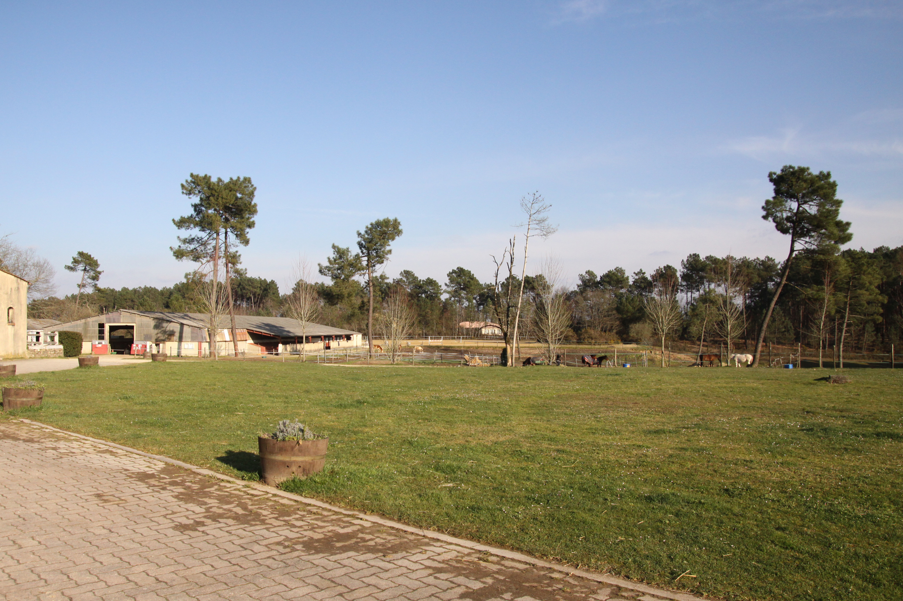
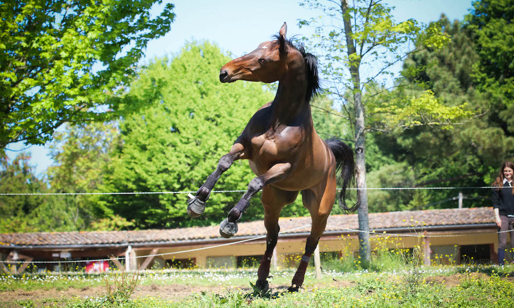
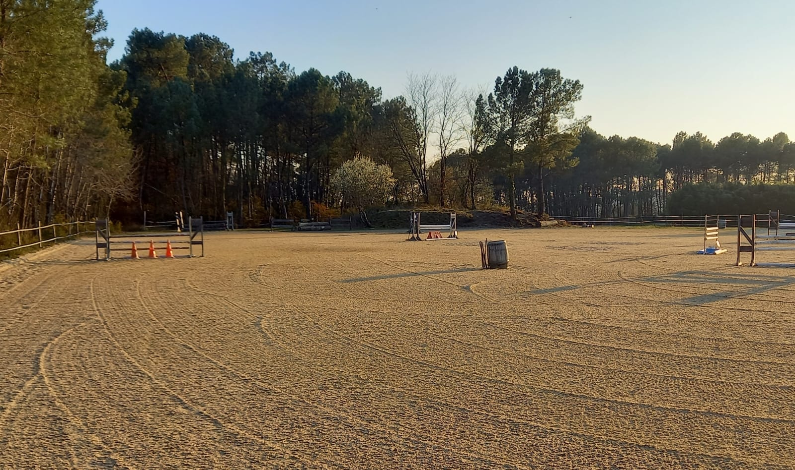
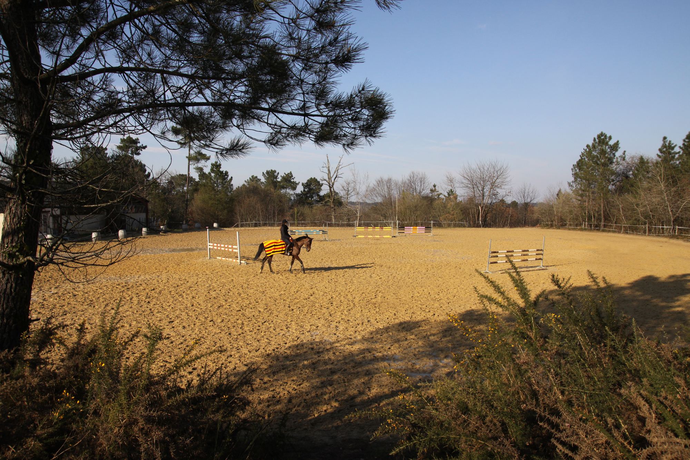
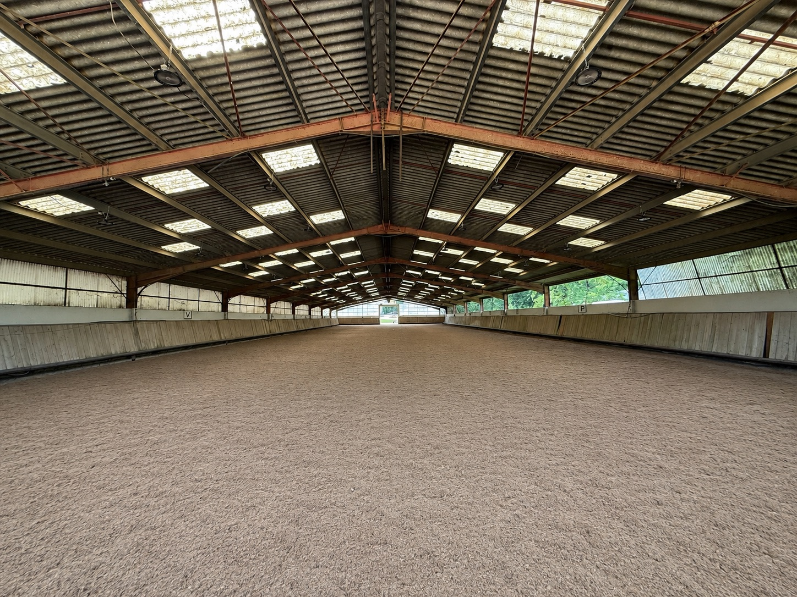

Pré
- Pré jour et nuit
- Box individuel
- Sortie quotidienne au pré
- Foin
- Eau à volonté
- Litière (paille ou copeaux)
- Surveillance quotidienne
- Accès carrière et manège

Des prés naturels et des boxes spacieux au cœur des vignobles du Bergeracois. Pension au pré, en box, ou en pré + box, selon le rythme de votre cheval.

Au cœur des vignobles du Bergeracois, les Écuries offrent paddocks, prés naturels et boxes spacieux. Tout est pensé pour le bien-être du cheval, sur la durée. Calme, espace, et la nature comme voisine.
Demander une visitePour les chevaux qui vivent dehors, ceux qui ont besoin d'un abri, ou un équilibre entre les deux.
Toutes les installations sont accessibles aux pensionnaires, du travail sur le plat au saut d'obstacles.



Ce qui est couvert par la pension, et ce qui relève de vous en tant que propriétaire.
Une visite des écuries vous est proposée avant tout engagement. Contactez-nous pour en parler.
Des propriétaires nous confient leur cheval depuis Bergerac et bien au-delà — Prigonrieux, La Force, Mussidan, Villamblard, Vergt, jusqu'à Montpon-Ménestérol et Sainte-Foy-la-Grande. L'accès se fait sans difficulté en van ou en camion par le nord de Bergerac, et le grand parking devant les écuries permet de manœuvrer et de décharger tranquillement. À noter : les GPS mènent souvent au manoir, il faut poursuivre une cinquantaine de mètres.